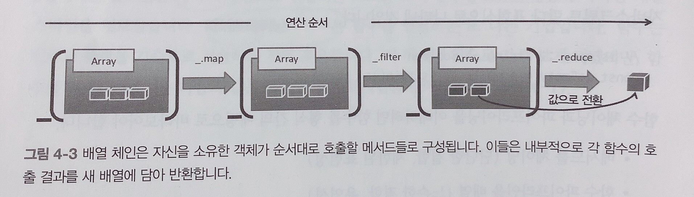
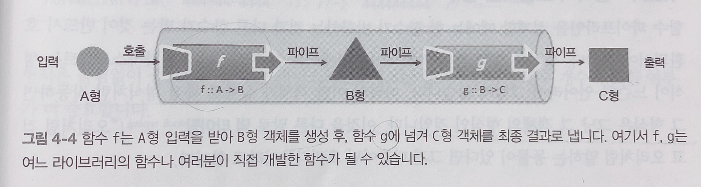
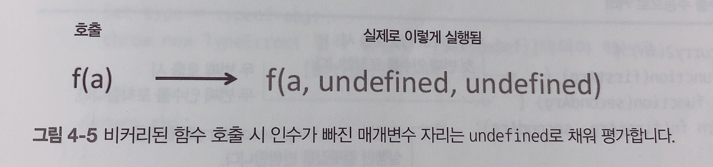
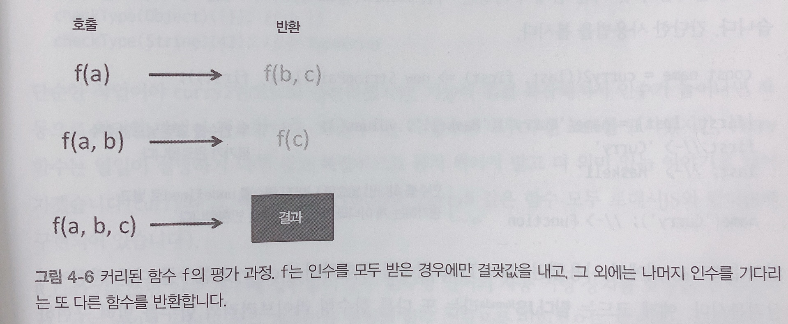

![[백준] 2577 숫자의 개수, 1475 방번호, 1158 요세푸스 문제](https://images.unsplash.com/photo-1461263895214-7761d3a942de?ixlib=rb-1.2.1&ixid=eyJhcHBfaWQiOjEyMDd9&auto=format&fit=crop&w=800&q=60)
이번에 정리할 내용은 Chapter 4. 재사용 가능한, 모듈적인 코드로!
이 장의 내용
- 함수 체인과 함수 파이프라인 비교
- 함수형 라이브러리 람다JS 소개
- 커링, 부분 적용, 함수 바인딩 개념 탐구
- 함수 합성으로 모듈적인 프로그램 제작
- 함수 조합기로 프로그램의 흐름을 개선
모듈성은 프로그램을 더 작고 독립적인 부분으로 나눌 수 있는 정도를 뜻한다. 모듈적 프로그램modular program은 자신을 구성하는 부속들로부터 자신의 의미를 도출할 수 있다는 점에서 뚜렷이 구분된다. 이들 부속품은 다른 시스템에 그대로 또는 더 쪼개서 통합할 수 있는 재사용 가능한 컴포넌트다. 이러한 코드는 생산성을 높일 뿐만 아니라 코드 유지보수성 및 가독성을 향상시키는데 도움이 된다.
3장에서는 하나의 래퍼 객체를 중심으로 단단히 결합된 메서드 체인으로 문제를 해결했다. 4장에서는 함수 합성을 통해 느슨하게 결합된 파이프라인을 만들고, 보다 유연한 독립적인 컴포넌트를 만들어보자. 이렇게 하려면 먼저 코드를 적정 수준으로 추상해야한다. 이 때 람다JS라는 함수형 프레임워크의 도움을 받아 부분 평가 및 합성 같은 주요 함수형 기법을 어떻게 구사하는지 살펴보자.
메서드 체인 대 함수 파이프라인
3장에서는 메서드 체인으로 함수를 연결했다. 파이프라이닝은 함수를 연결하는 또다른 기법이다.함수란 입력 형식과 출력 형식 간의 수학적인 매핑을 뜻한다.
[참고]함수형 커뮤니티에서는 하스켈 언어 표기법을 많이 쓴다. |
함수 체이닝과 파이프라이닝을 이해하려면 함수를 형식 간의 매핑으로 바라봐야한다.
- 메서드를 체이닝 (단단한 결합, 제한된 표현성)
- 함수 파이프라인을 배열 (느슨한 결합, 유연성)
메소드를 여럿 체이닝
map, filter 함수는 배열을 넘겨받아 새 배열을 돌려준다고 했다.
_.chain(names) // 뒤에 점(.)을 붙여 로대시JS의 다른 메서드를 호출 |
명령형에 비해 구조적으로도 향상됐고, 가독성도 좋아졌다. 하지만 로대시JS가 제공하는 연산만 쓸 수 있기 때문에 다른 (또는 직접 만든) 라이브러리 함수를 쉽게 연결할 수 없다.
고수준에서 보면 배열 메서드의 순차열은 아래와 같다. 여기서 체인을 끊어버리고 독립적인 함수열을 자유롭게 배열할 수 있으면 좋겠다.(우리가 만든 메서드나 다른 라이브러리의 메서드를 자유롭게 연산 과정에 추가할 수 있으면 좋겠다.) 그래서 함수 파이프라인이 필요한 것이다.

함수를 파이프라인에 나열
함수형 프로그래밍에서는 메서드 체이닝의 한계에서 벗어나, 출신에 관계없이 어떤 함수라도 유연하게 결합할 수 있다. 파이프라인pipeline이란 한 함수의 출력이 다음 함수의 입력이 되게끔 느슨하게 배열한, 방향성directional 함수 순차열이다.
아래는 서로다른 객체형을 다루는 함수를 연결한 파이프라인의 개념도다.

이 장에서는 함수 호출을 위의 그림과 같이 고수준의 간명한 함수 파이프라인으로 배열하는 기법을 연구한다.
체이닝과 파이프라인의 접근방법 차이
체이닝 - 객체 메서드를 통해 함수들을 단단히 결합
파이프라인 - 함수 입출력을 서로 연결지어 느슨하게 결합된 컴포넌트를 만든다. 단, 함수의 항수(인수 개수)와 형식이 호환되지 않으면 연결할 수 없다.
함수 호환 요건
함수형 프로그래밍에서는 파이프라인이 프로그램을 구축하는 유일한 수단!
정의된 문제를 해결하기 위해서는 단계별로 명확하게 정의된 계산을 차례차례 해내가는 과정이 필요하다. 이 계산 단계가 코드에서는 함수로 표현된다. 각 함수는 입력과 출력이 서로 호환돼야 한다.
- 형식 : 한 함수의 반환 형식과 수신 함수의 인수 형식이 일치해야 한다.
- 항수 : 수신 함수는 앞 단계 함수가 반환한 값을 처리하기 위해 적어도 하나 이상의 매개변수를 선언해야 한다.
형식이 호환되는 함수
함수 파이프라인을 설계할 때는 한 함수가 반환하는 것과 다른 함수가 받는 것이 반드시 호환되어야 한다.
정적 형식statically typed 언어에서는 형식이 큰 관심사이지만 자바스크립트는 형식이 느슨한 언어라서 그렇지 않다. 어떤 객체가 실제로 특정 형식처럼 작동하면 그 형식은 그냥 그 객체의 형식인 것 덕 타이핑(“오리처럼 걷고 말하는 동물이 있다면 그건 다름아닌 오리다”)이라고 한다.
자바스크립트는 동적 파견dynamic dispatch 체제 덕분에 형식과 무관하게 객체에서 속성과 메서드를 가져올 수 있지만, 함수가 어떤 형식의 값을 기대하는지 알아야 프로그램을 이해하기가 더 쉬워진다.
하스켈 표기법으로 코드에 주석을 붙여 문서화하는 식으로라도 입출력을 명확하게 정의해두면 프로그램을 이해하기가 수월해진다.
trim과 normalize로 함수 파이프라인을 수동으로 구성 |
형식은 틀림없이 중요한 이슈지만, 자바스크립트에서는 함수가 취하는 인수 개수의 호환 여부가 더 중요하다.
함수와 항수:튜플
항수란 함수가 받는 인수의 개수다. 함수의 길이라고도 한다. 다른 프로그래밍에서는 항수를 당연하게 생각하지만 FP에서는 함수에 선언된 인수의 개수가 많아질 수록 복잡도가 증가하는 경우가 많다. 가령 문자열 인수를 하나만 받는 함수는 서너개 받는 함수보다 훨씬 단순하다고 볼 수 있다.
|
우리의 목표는 함수의 인수를 가능한한 적게 하는 것, 그래야 인수가 많은 함수보다 더 유연하고 다목적으로 활용할 수 있다. 하지만 단항 함수를 얻는 것은 쉽지않다.
isValid가 오류 내용까지 메시지 형태로 반환하도록 고치면
isValid :: String -> (Boolean, String) |
그런데 이렇게 두가지 다른 값을 동시에 반환할 수 있을까???
함수형 언어는 튜플이라는 자료구조를 지원한다. 튜플은 유한 원소를 지닌 정렬된 리스트로, 보통 한 번에 두세 개 값을 묶어 (a, b, c) 와 같이 쓴다. isValid가 검사 결과와 에러 메시지를 함께 묶은 튜플 형태로 결과를 내면 한 개체로 반환할 수 있고, 필요시 그 다음 함수에 건네줄 수 있다.
튜플은 형식이 다른 원소를 한데 묶어 다른 함수에 건네주는 일이 가능한 불변성 자료구조다. 물론 객체 리터럴이나 배열같은 임의의 형식으로 반환하는 방법이 있긴하지만 튜플이 다음 측면에서 더 유리하다.
- 불변성: 튜플은 한번 만들어지면 나중에 내용을 못 바꿈.
- 임의 형식의 생성 방지 : 튜플은 전혀 무관한 값을 서로 연관지을 수 있다. 단지 데이터를 묶겠다고 새로운 형식을 정의하고 인스턴스화하는 건 괜스레 데이터 모형을 복잡하게 할 뿐…
- 이형배열의 생성 방지 : 형식이 다른 원소가 배열에 섞여 있으면 형식을 검사하는 방어코드를 수반하므로 다루기가 까다롭다. 배열은 태생 자체가 동일한 형식의 객체를 담는 구조다.
튜플은 2장에 나왔던 값 객체와 작동방식이 유사. 자바스크립트에서는 튜플 자료형을 처음부터 지원하지 않아서 자신만의 튜플을 구현해서 쓰면 된다.
// 4-2 형식화한 튜플자료형 |
위 코드에서 튜플 객체는 크기가 고정된 불변성 자료구조로, 함수 간 통신에 사용가능한 n개의 이형 값을 담을 수 있다.
ES6부터 지원하는 해체할당destructuring assignment과 조합하면 튜플 값을 변수로 깔끔하게 매핑할 수 있다.
// StringPair형식 |
튜플로 함수 항수를 줄일 순 있지만, 튜플만으로 만족스럽지 못할 땐 더 나은 방안이 있다.항수를 추상하는 동시에 모듈성, 재사용성을 높이는 함수 커링이라는 천연 조미료다.
커리된 함수를 평가
커링을 이해하려면 먼저 일반(비커리된) 평가와 커리된 평가의 차이점을 분명히 인지해야 한다.
자바스크립트에서는 비커리된 일반 함수를 호출할 때 인수가 모자라도 별문제없이 실행된다.

이와 달리 모든 매개변수가 명시된 커리된 함수에 일부 인수만 넣어 호출하면, 함수가 실행되는 게 아니라 모자란 나머지 인수가 다 채워지기를 기다리는 새로운 함수가 반환된다.

커링은 다변수 함수가 인수를 전부 받을 때까지 실행을 보류, 또는 지연시켜 단계별로 나뉜 단항 함수의 순차열로 전환하는 기법이다. 매개변수가 3개인 curry함수를 수학적으로 쓰면 다음과 같다.
curry(f) :: ((a, b, c) -> d) -> a -> b -> c -> d |
curry는 (a, b, c)라는 입력을 인수가 하나뿐인 호출로 해체하는 함수 간의 매핑이다.
자바스크립트로는 자동으로 함수를 커리할 수 없으므로 직접 코드 구현해야한다.
먼저 수동으로 커리하는 간단한 예제를 보면
// 두 인수를 수동으로 커리 |
반환된 함수는 나중에 사용할 인수를 포착하기 위해 함수 래퍼를 중첩한 코드에 불과하다.
커링은 클로저의 또다른 사례라고도 할 수 있다.
const name = curry2(last, first) => new StringPair(last, first) |
4-2에서 사용했던 checkType 함수를 람다JS라는 함수형 라이브러리의 함수를 빌려 구현해보자.
람다JS의 모든 기능은 전역변수 R을 통해 접근가능하다.
람다JS는 커링, 부분 적용, 합성 등의 기법을 구사할 때 매개변수를 간편하게 배열할 수 있기 때문
// checkType :: Type -> Object -> Object |
단순한 작업이야 수동으로 커리할 수 있겠지만 기능이 복잡해지고 인수가 늘어나면 자동으로 처리할 방법이 필요하다. R.curry를 쓰면 인수 개수와 상관없이 순수 함수형 언어의 자동 커링장치를 모방할 수 있다.자동 커링은 선언된 인수 개수만큼 중첩된 함수 스코프를 인위적으로 생성하는 작업이라고 보면 된다.
// fullname을 커리한 코드 |
그렇다면, 커링은 어디에 써먹는 기법일까?
- 함수 팩토리모방
- 재사용 가능한 모듈적 함수 템플릿을 구현
함수 팩토리를 모방
객체지향에서 인터페이스는 클래스가 반드시 구현해야할 규약을 정해놓은 추상적인 형식이다.
동일한 인터페이스를 두 클래스가 구현한 예제
- DB에서 학생정보 얻어오는 클래스
- 캐시에서 학생정보 얻어오는 클래스
호출자 관점에서 메서드를 호출한다는 사실이 중요하지, 객체의 출처는 관심없다. 이것이 바로 팩토리 메서드 패턴으로 설계한 객체지향코드의 아름다운 자태다.
자바스크립트로 바꿔보면
//fetchStudentFromDb :: DB -> (String -> Student) |
이 함수는 커리해놔서 일반 팩토리 메서드 findStudent로 평가하는 부분과 함수를 정의한 부분을 떼어놓을 수 있다. 실제 구현부는 둘 중하나
const findStudent = useDb ? fetchStudentFromDb(db) : fetchStudentFromArray(arr) |
이제 다른 모듈의 호출자는 실제 구현부를 알지 못해도 얼마든지 findStudent를 가져다 쓸 수 있다.
재사용 가능한 함수 템플릿 구현
애플리케이션의 상태(에러, 경고, 디버그 등) 별로 로그를 나누어 처리하고 싶은 경우가 있다.함수 템플릿은 생성 시점에 커리된 인수 개수를 기준으로 연관된 함수들을 묶어놓은 것
console.log보다 기능이 우수한 Log4js를 사용해서 예제를 들어보겠다.
// Log4js의 일반적인 사용법 |
하지만 이렇게 일일이 개별 파일에 코드를 복붙하면 엄청난 중복이 발생…!재사용이 가능함 함수 템플릿(즉, 로거모듈)을 커링 기법으로 정의하는 편이 유연성, 재사용 측면에서 좋다.
// 로거 함수 템플리을 만듦 |
로거를 커리하면 상황별로 적합한 로거를 모두 한곳에서 관리하고 재사용할 수 있다.
// 마지막 두 인수만 빼고 모두 평가 |
여러 에러 처리 구문을 하나의 함수나 파일로 구현하고 싶으면, 유연하게 마지막 매개변수를 제외한 나머지 매개변수를 부분 세팅하면 된다.
const logError = R.curry(logger)("console", "basic", "FJS", "ERROR") |
내부적으로는 이 함수에 curry함수를 연속 호출해서 결국 단항 함수 하나만 남을 것이다. 기존 함수에서 새 함수를 만들고 매개변수는 몇개라도 전달 가능하니 인수가 정해질때마다 단계별로 함수를 쉽게 쌓아 올릴 수 있다.
커링의 가장 중요한 의의는 다인수 함수를 단항 함수로 바꾼다는 것이다.
커링의 대용품인 부분 적용partial application과 매개변수 바인딩parameter binding은 자바스크립트에서도 어느 정도 지원되는 기법으로, 함수 파이프라인에 연결해도 잘 작동할 수 있도록 항수가 더 작은 함수를 만든다.
부분 적용과 매개변수 바인딩
부분 적용은 함수의 일부 매개변수값을 처음부터 고정시켜 항수가 더 작은 함수를 생성하는 기법이다.
커링처럼 부분 적용도 함수의 길이를 직접 줄이는 임무를 수행하지만 방법은 조금 다르다.
- 커링은 부분호출할 때마다 단항 함수를 중첩생성하며, 내부적으로는 이들을 단계별로 합성하여 최종 결과를 낸다. 커링은 여러 인수를 부분 평가하는 식으로도 변용할 수 있어서 개발자가 평가 시점과 방법을 좌지우지할 수 있다.
- 부분 적용은 함수 인수를 미리 정의된 값으로 묶은(할당한) 후, 인수가 적은 함수를 새로 만든다. 이 결과 함수는 자신의 클로저에 고정된 매개변수를 갖고 있으며, 후속 호출시
이미 평가를 마친상태다.
// 4-7. partial()구현부 |
방금전에 봤던 로거함수에 특정 매개변수를 부분 적용하면 더 구체적인 로직을 적용할 수 있다.
const consoleLog = _.partial(logger, "console", "json", "FJS 부분적용") |
이 함수를 보면서 커링과 부분 적용의 차이점을 다시 한번 보자.
세 매개변수를 부분 적용해서 만든 consoleLog 함수를 호출(단계별로 나뉜 게 아니라 1회성 호출)하려면 다른 두 인수도 필요하다. 따라서 커링처럼 consoleLog함수에 인수를 하나만 준다고 새 함수가 생성되는 게 아니라, 마지막 인수처리에 undefined를 넣고 함수를 평가하게 된다.
커링은 부분 적용을 자동화한 것이다.
커링과 부분 적용은 차이점을 아래와 같이 표현할 수 있다.
//커링 |
부분 적용과 작동 방식은 다르지만, 비슷하게 동작하는 Function.prototype.bind() 함수를 응용한 함수 바인딩 기법도 있다.
const log = _.bind(logger, undefined, "console", "json", "FJS 바인딩") |
_.bind 함수의 두번째 인수는 왜 undefined일까? 바인딩 결과 생성된 함수는 소유 객체 콘텍스트에서 실행되므로 undefined를 넘겨서 전역콘텍스트에 바인딩하라고 런타임에 요청한 것이다.
_.partial, _.bind 는 두가지 용도로 쓰인다.
- 언어의 핵심을 확장
- 지연된 함수에 바인딩
언어의 핵심을 확장
부분 적용은 String, Number 같은 핵심 자료형을 확장하여 언어의 표현성을 풍부하게 할 목적으로 사용할 수 있다.
// 문자열을 배열로 변환 |
지연된 함수에 바인딩
소유 객체를 전제로 메서드를 다룰 때는 함수 바인딩으로 콘텍스트 객체를 세팅하는 일이 중요하다.
const Scheduler = (function() { |
이렇게 스케쥴러만 있으면 함수 본체 안에 감싼 코드를 원하는 시간 이후에 실행시킬 수 있다.
![[백준] 2512 예산](https://images.unsplash.com/photo-1568219191146-7f2bbfda6891?ixlib=rb-1.2.1&ixid=eyJhcHBfaWQiOjEyMDd9&auto=format&fit=crop&w=800&q=60)
![[백준] 2110 공유기 설치](https://images.unsplash.com/photo-1555930593-7b9a6758818f?ixlib=rb-1.2.1&ixid=eyJhcHBfaWQiOjEyMDd9&auto=format&fit=crop&w=800&q=60)
![[백준] 1654 랜선 자르기](https://images.unsplash.com/photo-1555863448-e162ecfe4d98?ixlib=rb-1.2.1&ixid=eyJhcHBfaWQiOjEyMDd9&auto=format&fit=crop&w=800&q=60)